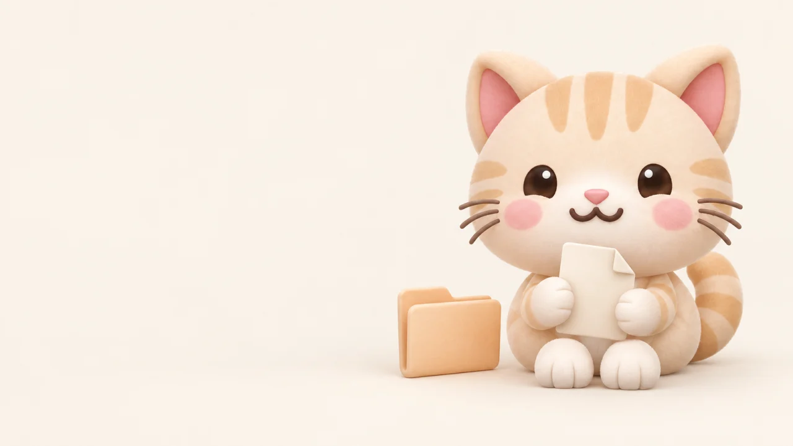
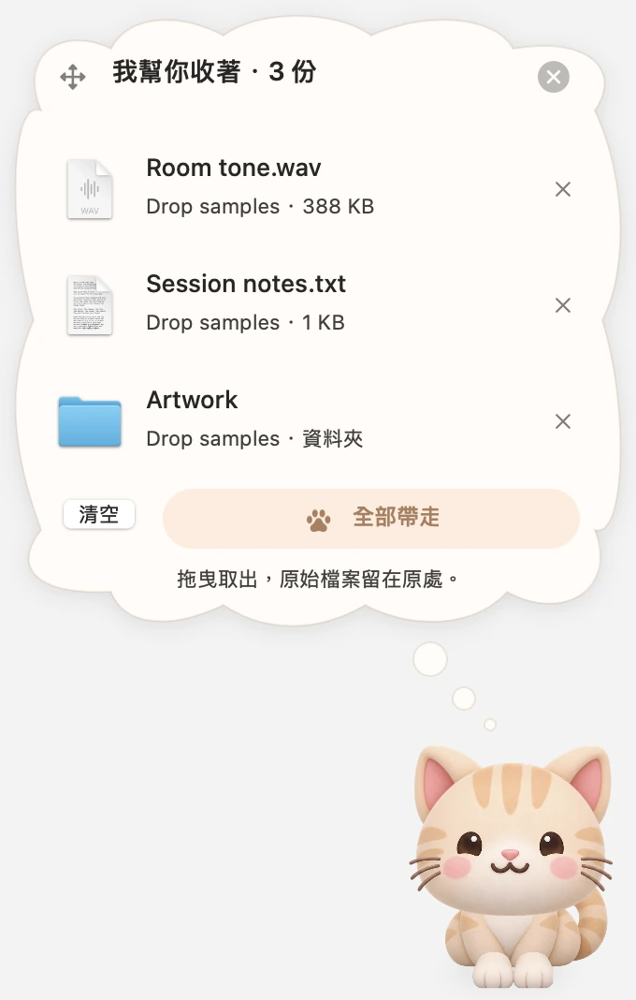

一隻小貓，
三個小動作。
把不同資料夾裡的檔案，先收在同一個地方。原始檔案都留在原處，小貓只是記住它們在哪裡。

- 01
先露出一截尾巴。
平常牠躲著輕輕搖尾巴。拖尾巴就能自由換位置；把檔案拖過去，牠會跑出來迎接。
- 02
啊——吃進去了。
一份或好幾份都可以。小貓會張嘴吃下檔案圖示，肚子也跟著鼓起來。
- 03
心裡惦記著你的檔案。
吃完後，思考泡泡自動打開。看看牠收了什麼，再拖出單一檔案，或拉著貓咪整批帶走。
接收端回報複製成功，才從暫放架移除這次交出的參照；取消拖曳就繼續保留。原始檔案不會被移動或刪除。
把這隻小貓，
介紹給大家。
整理好的媒體素材包：主視覺、真實介面截圖、App 圖示，以及中英文產品介紹，下載就能使用。
下載媒體素材包PNG 主視覺＋介面截圖＋中英文產品資料
{kind=link}
{kind=link}
產品小檔案
| 名稱 | UTUVO Drop |
|---|---|
| 製作 | UTUVO |
| 類型 | 檔案暫放架／桌面小寵物 |
| 平台 | macOS 14+ · Apple Silicon |
| 授權 | MIT |
| 目前版本 | v1.1.0 · 已簽章、公證的 DMG |
幾句話認識 Drop
UTUVO Drop 把檔案暫放架變成了一位桌面小夥伴。奶油橘色的小貓會從螢幕邊緣探出頭，幫你收好檔案參照，再把清單放進頭上的思考泡泡。要繼續工作時，可以逐一拖出，或拉著貓咪一次帶走。
使用 Swift 與 AppKit 製作，沒有第三方執行套件，不需要帳號、沒有追蹤分析，也不連網。這是一個讓日常桌面操作多一點親切感的小實驗。
使用前，
你可能想知道。
牠會搬動或複製我的原始檔嗎？
不會。放進小貓只是在記憶體中記住檔案位置，從 Drop 移除也只會拿掉參照。拖給其他 App 時，接收的 App 可能會複製或匯入檔案。
重新開啟後，檔案清單還會在嗎？
不會。Drop 是臨時暫放架，離開或重開 App 就會清空清單。你的原始檔案仍然留在原來的資料夾。
有可以直接安裝的版本嗎？
有，下載 Apple Silicon 版 DMG，把 UTUVO Drop 拖進 Applications，再從「應用程式」開啟。App 與 DMG 均已完成 Developer ID 簽章及 Apple 公證。點選選單列的貓咪圖示，可以換邊或結束 App；也能從 GitHub 取得原始碼自行編譯。
小貓什麼時候會跑出來？
把檔案拖到看得見的尾巴旁，或直接點尾巴，牠就會出來。Drop 不會監看整個 Mac 上的拖曳。找不到或無法讀取的檔案會在清單標記，並阻止拖出。
小小的想法，開放一起做。
看看程式碼，改成自己喜歡的樣子，或幫這隻小貓變得更好。